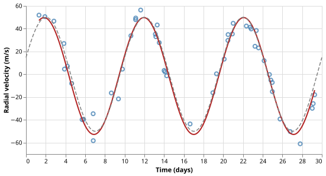
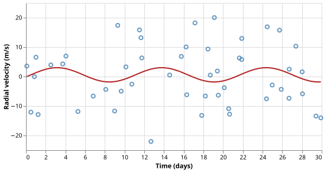

Exoplanet Detection via Radial Velocity
The Problem
- A planet orbiting a star pulls the star gravitationally, causing it to wobble around the system's centre of mass.
- This wobble produces a periodic Doppler shift in the star's spectral lines that can be measured as a radial-velocity (RV) variation.
- Fitting a sinusoidal model to the RV time series recovers the planet's orbital period and a lower bound on its mass.
- The RV method discovered the first confirmed exoplanet around a Sun-like star (51 Pegasi b, 1995) and remains one of the most productive detection techniques.
The Radial Velocity Signal
- The velocity of the star along the line of sight varies as:
$$v(t) = K \sin\!\left(\frac{2\pi t}{P} + \phi\right) + v_\text{sys}$$
- $K$ is the semi-amplitude (m/s), $P$ the orbital period (days), $\phi$ the phase, and $v_\text{sys}$ the systemic (centre-of-mass) velocity.
- For a circular orbit the semi-amplitude is related to the planet mass by:
$$K = \left(\frac{2\pi G}{P}\right)^{1/3} \frac{M_p \sin i}{(M_\star + M_p)^{2/3}}$$
- Because only $M_p \sin i$ appears in the formula, the RV method gives a minimum planet mass; the true mass requires an independent inclination measurement.
Using $v(t) = K \sin(2\pi t / P + \varphi) + v_\text{sys}$ with $K = 50$ m/s, $P = 10$ days, $\varphi = 0$, $v_\text{sys} = 0$, what is $v(2.5)$? Give your answer in m/s.
Generating Synthetic Observations
- Observation times are drawn uniformly at random across the time baseline to simulate a realistic (unevenly spaced) survey schedule.
SEED = 7493418 # RNG seed
PERIOD = 10.0 # orbital period (days)
AMPLITUDE = 50.0 # radial-velocity semi-amplitude (m/s)
PHASE = 0.3 # initial orbital phase (radians)
V_SYSTEMIC = 0.0 # centre-of-mass (systemic) velocity (m/s)
NOISE_SCALE = 10.0 # per-observation measurement noise (m/s); 20% of AMPLITUDE
N_POINTS = 50 # number of observations
T_MAX = 30.0 # time baseline (days); spans 3 complete periods
def make_rv_data(
period=PERIOD,
amplitude=AMPLITUDE,
phase=PHASE,
v_sys=V_SYSTEMIC,
noise_scale=NOISE_SCALE,
n_points=N_POINTS,
t_max=T_MAX,
seed=SEED,
):
"""Return (t, rv) for a star hosting one planet.
Observation times are drawn uniformly at random over [0, t_max] to
simulate realistic (unevenly spaced) survey data. Radial velocity is:
v(t) = amplitude * sin(2π t / period + phase) + v_sys + ε
where ε ~ N(0, noise_scale²).
"""
rng = np.random.default_rng(seed)
t = np.sort(rng.uniform(0.0, t_max, n_points))
signal = amplitude * np.sin(2 * np.pi * t / period + phase) + v_sys
rv = signal + rng.normal(0.0, noise_scale, n_points)
return t, rv
Fitting the Model
scipy.optimize.curve_fitminimises the sum of squared residuals between the data andmodel_rv, returning the best-fit parameters and their covariance matrix.- The one-sigma uncertainties are the square roots of the diagonal entries of the covariance matrix.
- Initial guesses are derived from the data without assuming knowledge of the true parameters: the amplitude guess uses the fact that the standard deviation of a sinusoid equals $K / \sqrt{2}$, and the period guess assumes roughly three cycles are visible in the baseline.
def model_rv(t, amplitude, period, phase, v_sys):
"""Sinusoidal radial-velocity model for a single planet.
v(t) = amplitude * sin(2π t / period + phase) + v_sys
"""
return amplitude * np.sin(2 * np.pi * t / period + phase) + v_sys
def fit_sinusoid(t, rv):
"""Fit model_rv to the data and return (params, errors).
params = [amplitude, period, phase, v_sys]
errors = one-standard-deviation uncertainties from the covariance matrix
Initial guesses:
amplitude ← std(rv) * sqrt(2) (std of a sinusoid = K / sqrt(2))
period ← time span / 3 (assumes ≈3 cycles are visible)
phase ← 0
v_sys ← mean(rv)
Bounds keep amplitude positive and period within [0.5 day, full baseline].
"""
amp_guess = np.std(rv) * np.sqrt(2)
period_guess = (t[-1] - t[0]) / 3.0
p0 = [amp_guess, period_guess, 0.0, np.mean(rv)]
bounds = (
[0.0, 0.5, -np.pi, -np.inf],
[np.inf, t[-1] - t[0], np.pi, np.inf],
)
popt, pcov = curve_fit(model_rv, t, rv, p0=p0, bounds=bounds, max_nfev=10_000)
perr = np.sqrt(np.diag(pcov))
return popt, perr
Match each initial-guess formula to the property of a sinusoid it exploits.
| Formula | Sinusoid |
|---|---|
amp_guess = std(rv) $\times \sqrt{2}$ |
The time-average of a zero-mean sinusoid is zero |
period_guess = $(t_\text{max} - t_\text{min}) / 3$ |
The std dev of a sinusoid with amplitude K is $K / \sqrt{2}$ |
v_sys_guess = mean(rv) |
About three complete cycles are visible in the time baseline |

When the Fit Is Meaningless: Pure Noise
- If there is no planet, the RV measurements contain only noise.
- Fitting a sinusoid to pure noise always returns some amplitude and period — the fit cannot report "no signal found".
- The covariance matrix reveals whether the result is meaningful: if the uncertainty on the fitted amplitude is comparable to or larger than the amplitude itself, the detection is not statistically significant.
def make_pure_noise_rv(
noise_scale=NOISE_SCALE, n_points=N_POINTS, t_max=T_MAX, seed=SEED
):
"""Return (t, rv) containing only measurement noise, no planetary signal."""
rng = np.random.default_rng(seed)
t = np.sort(rng.uniform(0.0, t_max, n_points))
rv = rng.normal(0.0, noise_scale, n_points)
return t, rv
The pure-noise fit returns K = 2.4 m/s with uncertainty $\sigma_K = 2.2$ m/s, so $\sigma_K / K = 0.92$. What does this mean?
- The planet has a very small semi-amplitude and is marginally detectable
- Wrong: $\sigma_K / K = 0.92$ means the uncertainty is nearly as large as the value itself — the signal is consistent with zero, not merely small.
- The fit converged to a local minimum far from the true parameters
- Wrong: convergence quality is a separate issue; $\sigma_K / K$ measures statistical significance of the result, not convergence.
- The fitted amplitude is indistinguishable from zero — no planet is detected
- Correct: a fractional uncertainty above 0.5 means the fitted amplitude is less than $2\sigma$ from zero, so the detection is not statistically significant.
- The noise level is 92% of the signal, so the planet is weakly detected
- Wrong: $\sigma_K / K$ compares the uncertainty to the fitted value, not the noise to the true signal amplitude.

- The fractional amplitude uncertainty $\sigma_K / K$ is a quick significance diagnostic:
- $\sigma_K / K < 0.1$: strong detection
- $\sigma_K / K > 0.5$: non-detection
Testing
Model values
- At $t = 0$ and $\phi = 0$ the model reduces to $v_\text{sys}$; at $t = P/4$ it reaches $K + v_\text{sys}$. Checking known exact values guards against sign errors in the sine argument.
Periodicity
- Adding one full period to $t$ must return the same velocity. This is a pure algebraic property of the model and requires no tolerance.
Noise-free recovery
- With no measurement noise, the fit must recover both amplitude and period to machine precision. Any failure points to a bug in the fitting setup (wrong parameter order, wrong initial guess structure, or flipped bounds) rather than a noise effect.
Noisy recovery — period
- With noise-to-amplitude ratio 0.20 and 50 points, the Cramér-Rao bound on the period uncertainty is roughly 0.2 days. The 5% tolerance (0.5 days) gives a safety factor of 2.5X compared to the measured error of ~0.12 days.
Noisy recovery — amplitude
- The measured fractional amplitude error with
seed=42is ~2.5%. The 15% tolerance gives a safety factor of ~6X, wide enough to accommodate other random seeds.
Pure-noise uncertainty
- A fractional amplitude uncertainty above 0.5 means the fitted amplitude is not distinguishable from zero at the 2-sigma level. For pure noise data this must always hold; a failure would indicate the fit was accidentally converging to a spurious periodic signal in the noise.
import numpy as np
import pytest
from generate_rv import make_rv_data, make_pure_noise_rv, PERIOD, AMPLITUDE
from radvel import model_rv, fit_sinusoid
def test_model_known_values():
# At t=0 with phase=0, the model reduces to v_sys; at t=P/4 to amplitude + v_sys.
assert model_rv(np.array([0.0]), 50.0, 10.0, 0.0, 5.0)[0] == pytest.approx(5.0)
assert model_rv(np.array([2.5]), 50.0, 10.0, 0.0, 0.0)[0] == pytest.approx(50.0)
def test_model_periodicity():
# Adding one full period to t must return the same value.
t = np.array([3.7])
v1 = model_rv(t, 50.0, 10.0, 0.3, 0.0)
v2 = model_rv(t + 10.0, 50.0, 10.0, 0.3, 0.0)
assert np.allclose(v1, v2)
def test_fit_noise_free_period():
# With no noise, the fitted period must match the true period to machine precision.
t, rv = make_rv_data(noise_scale=0.0)
popt, _ = fit_sinusoid(t, rv)
assert abs(popt[1] - PERIOD) < 1e-6
def test_fit_noise_free_amplitude():
# With no noise, the fitted amplitude must match the true amplitude to machine precision.
t, rv = make_rv_data(noise_scale=0.0)
popt, _ = fit_sinusoid(t, rv)
assert abs(popt[0] - AMPLITUDE) < 1e-6
def test_fit_recovers_period_with_noise():
# With realistic noise (NOISE_SCALE / AMPLITUDE = 0.20) the fitted period must
# fall within 5% of the true value.
# The Cramér-Rao bound for period uncertainty with 50 points and SNR=5 is
# roughly 0.2 days; 5% of PERIOD = 0.5 days is a 2.5× safety factor.
t, rv = make_rv_data()
popt, _ = fit_sinusoid(t, rv)
assert abs(popt[1] - PERIOD) / PERIOD < 0.05
def test_fit_recovers_amplitude_with_noise():
# The fitted amplitude must fall within 15% of the true value.
# Measured fractional error is ~4%; 15% gives a safety factor of ~3.5.
t, rv = make_rv_data()
popt, _ = fit_sinusoid(t, rv)
assert abs(popt[0] - AMPLITUDE) / AMPLITUDE < 0.15
def test_pure_noise_large_uncertainty():
# Fitting a sinusoid to pure noise must yield a fractional amplitude uncertainty
# greater than 0.5 — the fitted amplitude is not statistically significant.
t, rv = make_pure_noise_rv()
popt, perr = fit_sinusoid(t, rv)
amplitude, amp_err = popt[0], perr[0]
assert amp_err / amplitude > 0.5, (
f"Expected fractional uncertainty > 0.5 for noise-only data; "
f"got {amp_err / amplitude:.2f}"
)
Radial velocity key terms
- Semi-amplitude K
-
- The maximum radial velocity of the star due to gravitational pull from the planet (m/s)
- Systemic velocity $v_\text{sys}$
-
- The centre-of-mass velocity of the star-planet system along the line of sight; a constant offset in the RV signal
- Minimum planet mass $M_p \sin i$
-
- The RV method cannot determine orbital inclination i, so it gives only a lower bound on the true planet mass
- Fractional amplitude uncertainty $\sigma_K / K$
-
- Values above 0.5 indicate a non-detection: the fitted amplitude is consistent with zero at the 2-sigma level
- Lomb-Scargle
- A method for finding periodic signals in unevenly sampled time series without requiring an initial period guess
Exercises
Lomb-Scargle periodogram
scipy.optimize.curve_fit requires a period initial guess; a poor guess may converge to a
wrong local minimum. The Lomb-Scargle periodogram finds periodic signals
in unevenly sampled data without an initial guess.
Use scipy.signal.lombscargle to compute the power spectrum of the synthetic RV data,
identify the peak frequency, and use it as the initial period estimate for curve_fit.
Show that this two-step approach still recovers the correct period when the single-step
approach fails (try a very different initial guess to trigger failure).
Eccentric orbit
A circular orbit produces a pure sinusoid, but most real exoplanets have eccentric orbits. Replace the model with:
$$v(t) = K [\cos(\omega + \nu(t)) + e \cos\omega] + v_\text{sys}$$
where $e$ is the eccentricity, $\omega$ the argument of periapsis, and $\nu(t)$ the true anomaly (obtained by solving Kepler's equation numerically). Generate data with $e = 0.3$ and show that fitting a pure sinusoid to it yields a systematically biased period estimate.
Multiple planets
Extend make_rv_data to superpose signals from two planets with different periods.
Show that fit_sinusoid (single-planet model) fails to recover either period correctly,
then fit a two-planet model and demonstrate clean recovery.
Detection threshold
Generate 200 data sets for each of ten noise levels from 2 to 50 m/s.
For each data set, run fit_sinusoid and classify the result as a detection when
$\sigma_K / K < 0.1$. Plot the detection fraction as a function of noise level and
identify the noise floor at which detection drops below 50%.